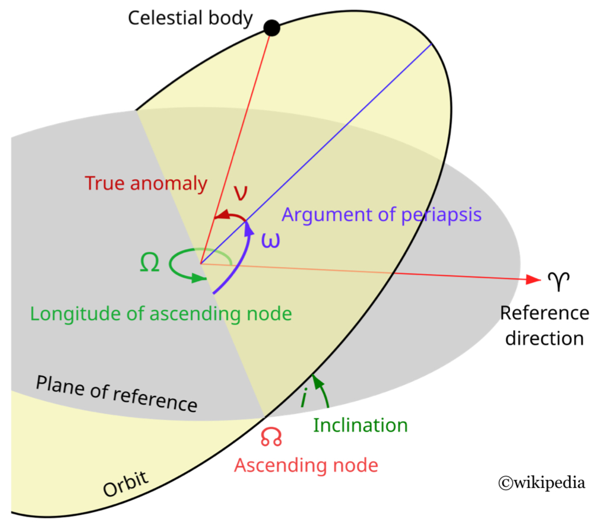
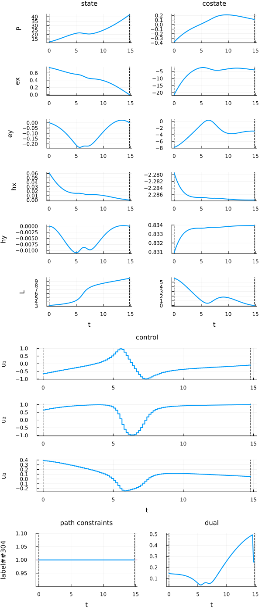
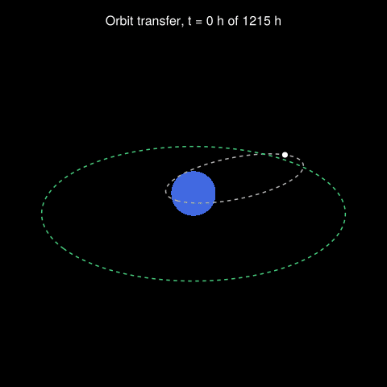

Minimum time orbit transfer
Introduction
Minimum time control of the Kepler equation (CNES / TAS / Inria / CNRS collaboration, check [1] and [2]):
\[\begin{cases} t_f \to \min,\\ \ddot{q} = -\mu\frac{q}{|q|^3} + \frac{T_{\max}}{m}\,u\,,\quad |u| \leq 1,\quad t \in [0,t_f],\\ \dot{m} = -\beta T_{\max}|u|, \end{cases}\]
where $q \in \mathbf{R}^3$ is the position of the spacecraft, $m$ its mass and $u$ the thrust direction, normalised by the maximum thrust $T_{\max}$.
Fixed initial and final Keplerian orbits (free final longitude). Instead of $(q, \dot{q})$, the dynamics is written in equinoctial elements $x = (P, e_x, e_y, h_x, h_y, L)$ (semilatus rectum, eccentricity vector, inclination vector and longitude), which are regular for the elliptic orbits considered here. In these coordinates the system is control-affine:
\[\dot{x} = F_0(x) + \frac{T_{\max}}{m(t)} \sum_{i=1}^3 u_i F_i(x),\]
and, since the minimum time trajectory uses full thrust ($|u| = 1$ almost everywhere), the mass is known in closed form, $m(t) = m_0 - \beta T_{\max} t$. This is what is used below.

This page is a showcase of OptimalControl.jl: the problem is described once with the @def macro, solved by a direct method with solve, and the direct solution is then used to initialise an indirect (shooting) method built on top of the same model with Flow.
using OptimalControl
using NLPModelsIpopt
using OrdinaryDiffEq
using Plots
using MINPACK
using ForwardDiff
using LinearAlgebra
import CairoMakie as Mk # 3D animation (qualified, to avoid clashes with Plots)Problem definition
Units are Mm ($10^6$ m), hours and kg, so that thrusts in Newtons are converted with $3600^2 / 10^6$.
const mass0 = 1500 # Initial mass of the spacecraft (kg)
const β = 1.42e-02 # Engine specific impulsion
const μ = 5165.8620912 # Earth gravitation constant (Mm³/h²)
const P0 = 11.625 # Initial semilatus rectum
const ex0, ey0 = 0.75, 0 # Initial eccentricity vector
const hx0, hy0 = 6.12e-2, 0 # Initial inclination vector
const L0 = π # Initial longitude
const Pf = 42.165 # Final semilatus rectum
const exf, eyf = 0, 0 # Final eccentricity vector
const hxf, hyf = 0, 0 # Final inclination vector
const Lf = 3π # Estimation of final longitude for Tmax = 60
const x0 = [P0, ex0, ey0, hx0, hy0, L0] # Initial state
const xf = [Pf, exf, eyf, hxf, hyf, Lf] # Final state (L free: only used as a guess)
newton_to_internal(Tmax) = Tmax * 3600^2 / 1e6 # N → kg⋅Mm/h²
asqrt(x; ε=1e-9) = sqrt(sqrt(x^2+ε^2)) # Smooth sqrt, avoids issues with AD
function F0(x)
P, ex, ey, hx, hy, L = x
pdm = asqrt(P / μ)
cl = cos(L)
sl = sin(L)
w = 1 + ex * cl + ey * sl
return [0, 0, 0, 0, 0, w^2 / (P * pdm)]
end
function F1(x)
P, ex, ey, hx, hy, L = x
pdm = asqrt(P / μ)
cl = cos(L)
sl = sin(L)
return pdm * [0, sl, -cl, 0, 0, 0]
end
function F2(x)
P, ex, ey, hx, hy, L = x
pdm = asqrt(P / μ)
cl = cos(L)
sl = sin(L)
w = 1 + ex * cl + ey * sl
return pdm * [2P / w, cl + (ex + cl) / w, sl + (ey + sl) / w, 0, 0, 0]
end
function F3(x)
P, ex, ey, hx, hy, L = x
pdm = asqrt(P / μ)
cl = cos(L)
sl = sin(L)
w = 1 + ex * cl + ey * sl
pdmw = pdm / w
zz = hx * sl - hy * cl
uh = (1 + hx^2 + hy^2) / 2
return pdmw * [0, -zz * ey, zz * ex, uh * cl, uh * sl, zz]
endThe optimal control problem is built by a function of the thrust, so that the same model serves for both thrust levels considered below.
function kepler(Tmax)
T = newton_to_internal(Tmax)
ocp = @def begin
tf ∈ R, variable
t ∈ [0, tf], time
x = (P, ex, ey, hx, hy, L) ∈ R⁶, state
u ∈ R³, control
x(0) == x0
x[1:5](tf) == xf[1:5]
mass = mass0 - β * T * t
ẋ(t) == F0(x(t)) + T / mass * (u₁(t) * F1(x(t)) + u₂(t) * F2(x(t)) + u₃(t) * F3(x(t)))
u₁(t)^2 + u₂(t)^2 + u₃(t)^2 ≤ 1
tf → min
end
return ocp
endDirect solve, Tmax = 60 Newtons
The initial guess is a linear interpolation between the initial and final states.
Tmax = 60 # Maximum thrust in Newtons
tf = 15 # Estimation of final time
x(t) = x0 + (xf - x0) * t / tf # Linear interpolation
u = [0.1, 0.5, 0.] # Initial guess for the control
nlp_init = (state=x, control=u, variable=tf) # Initial guess for the NLP
ocp = kepler(Tmax)
nlp_sol = solve(ocp; init=nlp_init, grid_size=100)▫ This is OptimalControl 2.0.4, solving with: collocation → adnlp → ipopt (cpu)
📦 Configuration:
├─ Discretizer: collocation (grid_size = 100)
├─ Modeler: adnlp
└─ Solver: ipopt
▫ This is Ipopt version 3.14.19, running with linear solver MUMPS 5.9.0.
Number of nonzeros in equality constraint Jacobian...: 9211
Number of nonzeros in inequality constraint Jacobian.: 303
Number of nonzeros in Lagrangian Hessian.............: 9027
Total number of variables............................: 907
variables with only lower bounds: 0
variables with lower and upper bounds: 0
variables with only upper bounds: 0
Total number of equality constraints.................: 611
Total number of inequality constraints...............: 101
inequality constraints with only lower bounds: 0
inequality constraints with lower and upper bounds: 0
inequality constraints with only upper bounds: 101
iter objective inf_pr inf_du lg(mu) ||d|| lg(rg) alpha_du alpha_pr ls
0 1.5000000e+01 2.14e-01 2.75e-01 0.0 0.00e+00 - 0.00e+00 0.00e+00 0
1 1.5630325e+01 1.74e-01 6.57e-01 -6.1 7.40e+00 - 5.82e-01 1.87e-01h 3
2 1.6098934e+01 1.52e-01 1.17e+00 -6.4 3.75e+00 0.0 4.78e-01 1.25e-01h 4
3 1.9047770e+01 6.23e-02 2.76e+00 -1.1 4.01e+00 -0.5 7.61e-01 5.98e-01H 1
4 2.0500845e+01 2.93e-02 2.04e+00 -1.7 1.63e+00 -0.1 9.99e-01 8.93e-01h 1
5 2.0655039e+01 1.41e-04 3.32e-01 -3.4 1.54e-01 0.4 9.98e-01 1.00e+00h 1
6 2.0463684e+01 3.13e-04 1.53e-01 -3.6 1.91e-01 -0.1 1.00e+00 1.00e+00h 1
7 1.9885423e+01 2.40e-03 1.55e-01 -4.5 5.79e-01 -0.6 1.00e+00 9.99e-01f 1
8 1.9329009e+01 5.94e-03 1.23e-01 -2.7 1.05e+00 -1.1 1.00e+00 5.28e-01f 1
9 1.8485264e+01 5.41e-02 7.87e-02 -2.4 1.43e+00 -1.5 1.00e+00 5.92e-01f 1
iter objective inf_pr inf_du lg(mu) ||d|| lg(rg) alpha_du alpha_pr ls
10 1.7319517e+01 2.39e+00 2.16e-01 -2.2 3.16e+00 -2.0 1.00e+00 6.78e-01f 1
11 1.5566289e+01 8.34e+00 3.67e-01 -2.3 2.05e+01 -2.5 7.86e-02 1.71e-01h 1
12 1.3881805e+01 9.47e+01 5.74e-01 -2.3 1.16e+01 -2.1 3.94e-01 7.14e-01h 1
13 1.4987784e+01 2.26e+01 3.72e-01 -1.9 3.88e+00 -0.7 7.95e-01 1.00e+00h 1
14 1.5395019e+01 4.56e+00 4.52e-01 -1.7 1.80e+00 -0.3 1.00e+00 1.00e+00h 1
15 1.5327104e+01 3.85e+00 2.90e-01 -1.9 4.30e+00 - 1.00e+00 3.84e-01h 1
16 1.5671211e+01 6.37e-01 3.15e-01 -1.7 3.49e+00 - 1.00e+00 9.99e-01h 1
17 1.5808227e+01 3.19e-03 5.77e-02 -1.7 7.93e-01 - 1.00e+00 1.00e+00h 1
18 1.5206980e+01 1.62e-02 4.61e-02 -7.7 6.01e-01 - 1.00e+00 1.00e+00h 1
19 1.4783741e+01 3.15e-01 9.44e-03 -3.1 5.59e-01 - 1.00e+00 9.87e-01h 1
iter objective inf_pr inf_du lg(mu) ||d|| lg(rg) alpha_du alpha_pr ls
20 1.4796879e+01 2.26e-02 3.61e-04 -4.7 2.00e-01 - 1.00e+00 1.00e+00h 1
21 1.4796618e+01 6.50e-05 8.32e-06 -5.7 1.94e-02 - 1.00e+00 1.00e+00h 1
22 1.4796431e+01 2.54e-08 3.90e-09 -11.0 2.54e-04 - 1.00e+00 1.00e+00h 1
23 1.4796431e+01 1.42e-14 9.33e-15 -11.0 1.29e-07 - 1.00e+00 1.00e+00h 1
Number of Iterations....: 23
(scaled) (unscaled)
Objective...............: 1.4796431325861660e+01 1.4796431325861660e+01
Dual infeasibility......: 9.3258734068513149e-15 9.3258734068513149e-15
Constraint violation....: 1.4210854715202004e-14 1.4210854715202004e-14
Variable bound violation: 0.0000000000000000e+00 0.0000000000000000e+00
Complementarity.........: 1.0000007287831398e-11 1.0000007287831398e-11
Overall NLP error.......: 1.0000007287831398e-11 1.0000007287831398e-11
Number of objective function evaluations = 35
Number of objective gradient evaluations = 24
Number of equality constraint evaluations = 35
Number of inequality constraint evaluations = 35
Number of equality constraint Jacobian evaluations = 24
Number of inequality constraint Jacobian evaluations = 24
Number of Lagrangian Hessian evaluations = 23
Total seconds in IPOPT = 6.985
EXIT: Optimal Solution Found.tf_direct = variable(nlp_sol)
p = costate(nlp_sol)
p0 = p(0)
println("Direct method: tf = ", tf_direct, " h")
plot(nlp_sol)
Shooting (1/2), Tmax = 60 Newtons
The maximising control is regular and given by the normalised projection of the costate on the control vector fields. A flow is built from the OCP and this feedback.
function ur(t, x, p, tf) # Regular maximising control
H1 = p' * F1(x)
H2 = p' * F2(x)
H3 = p' * F3(x)
u = [H1, H2, H3]
return u / norm(u)
end
fr = Flow(ocp, ur) # Regular flow (control feedback version)The unknowns are the final time and the initial costate (7 unknowns), the equations are the 5 final conditions on the state, the transversality condition on the free final longitude, and a normalisation of the initial costate ($|p(0)| = 1$), valid since the final time is free.
function make_shooting(flow)
function shoot(ξ::Vector{S}) where S
tf, p0 = ξ[1], ξ[2:end]
xf_, pf = flow(0, x0, p0, tf)
s = zeros(S, 7)
s[1:5] = xf_[1:5] - xf[1:5]
s[6] = pf[6]
s[7] = sum(abs2, p0) - 1
return s
end
jshoot(ξ) = ForwardDiff.jacobian(shoot, ξ)
shoot!(s, ξ) = (s[:] = shoot(ξ); nothing)
jshoot!(js, ξ) = (js[:] = jshoot(ξ); nothing)
return shoot, shoot!, jshoot!
end
shoot, shoot!, jshoot! = make_shooting(fr)
p0 = p0 / norm(p0) # Normalisation |p0| = 1 for free final time
ξ = [tf_direct; p0] # Initial guess from the direct solution
bvp_sol = fsolve(shoot!, jshoot!, ξ; show_trace=true)
println("Converged: ", bvp_sol.converged, ", |s(ξ)| = ", norm(shoot(bvp_sol.x)))
println("Shooting: tf = ", bvp_sol.x[1], " h (direct: ", tf_direct, " h)")Iter f(x) inf-norm Step 2-norm Step time
------ -------------- -------------- --------------
1 1.416162e+00 0.000000e+00 4.177802
2 7.695113e-02 5.736564e-05 10.684804
3 1.727077e-02 1.711084e-05 0.005064
4 3.809695e-03 5.434911e-07 0.028007
5 9.728789e-05 9.728304e-09 0.004788
6 5.922661e-05 1.085583e-10 0.006031
7 5.786130e-06 3.601035e-12 0.010745
8 3.130306e-08 4.488490e-14 0.034636
9 2.179021e-10 1.382110e-18 0.005034
Converged: true, |s(ξ)| = 2.1800683669473358e-10
Shooting: tf = 14.800364354649739 h (direct: 14.79643132586166 h)Shooting (2/2), Tmax = 0.7 Newtons
For a low thrust, the transfer takes many revolutions around the Earth. Shooting is then the natural tool, provided a good initial guess is available: the one used below is hard-coded (such guesses are classically obtained by a continuation on the thrust, see [2]). A flow is now built directly from the maximised Hamiltonian, which is the same model as before with the control eliminated.
Tmax = 0.7 # Maximum thrust (Newtons)
T = newton_to_internal(Tmax)
hr = OptimalControl.Hamiltonian((t, x, p) -> begin # Regular maximised Hamiltonian
H0 = p' * F0(x)
H1 = p' * F1(x)
H2 = p' * F2(x)
H3 = p' * F3(x)
mass = mass0 - β * T * t
return H0 + T / mass * sqrt(H1^2 + H2^2 + H3^2)
end; autonomous=false)
fh = Flow(hr)
shoot, shoot!, jshoot! = make_shooting(fh)
tf = 1.210e3
p0 = -[-2.215319700438820e+01, -4.347109477345140e+01, 9.613188807286992e-01,
3.181800985503019e+02, -2.307236094862410e+00, -5.797863110671591e-01]
p0 = p0 / norm(p0) # Normalisation |p0| = 1 for free final time
ξ = [tf; p0] # Initial guess
bvp_sol = fsolve(shoot!, jshoot!, ξ; show_trace=true)
println("Converged: ", bvp_sol.converged, ", |s(ξ)| = ", norm(shoot(bvp_sol.x)))
println("Shooting: tf = ", bvp_sol.x[1], " h")Iter f(x) inf-norm Step 2-norm Step time
------ -------------- -------------- --------------
1 1.073121e+00 0.000000e+00 1.908813
2 1.431634e-01 1.222058e+01 8.996611
3 1.090164e-01 1.104763e+01 0.287162
4 1.848523e-02 2.972697e+00 0.273177
5 1.996556e-02 4.469494e-01 0.281461
6 8.609313e-03 2.182014e-02 0.265688
7 2.826554e-03 2.618819e-03 0.300810
8 1.241996e-03 7.992740e-05 0.313994
9 1.556128e-03 6.608313e-05 1.310107
10 7.600920e-05 2.812131e-05 0.234991
11 4.207218e-05 1.773854e-07 0.330550
12 7.678559e-06 3.852828e-07 0.324629
13 5.449918e-07 7.233556e-09 0.352737
14 6.415603e-08 4.855267e-11 0.313171
15 1.515303e-09 4.660552e-13 0.282210
Converged: true, |s(ξ)| = 1.5785140927967466e-9
Shooting: tf = 1214.5922191380664 hPlots
First, the positions in Cartesian coordinates are recovered from the equinoctial elements.
tf = bvp_sol.x[1]
p0 = bvp_sol.x[2:end]
ode_sol = fh((0, tf), x0, p0)
# Cartesian position (Mm) from equinoctial elements
function position(P, ex, ey, hx, hy, L)
cL, sL = cos(L), sin(L)
w = 1 + ex * cL + ey * sL
Z = hx * sL - hy * cL
C = 1 + hx^2 + hy^2
return [P * ((1 + hx^2 - hy^2) * cL + 2hx * hy * sL) / (C * w),
P * ((1 - hx^2 + hy^2) * sL + 2hx * hy * cL) / (C * w),
2P * Z / (C * w)]
endThe trajectory is then displayed with Makie as an animated 3D scene: the Earth, the initial and final orbits and the spacecraft trajectory (coloured by time), seen by a moving camera that rotates around the Earth, tilts, and zooms out as the orbit grows.
# Sample the trajectory uniformly in time
ts = range(0, tf, length=3000)
traj = [position(ode_sol(t)[1:6]...) for t in ts]
pts = Mk.Point3f[Mk.Point3f(q...) for q in traj]
# Initial and final orbits (osculating ellipses)
Ls = range(0, 2π, length=400)
orbit0 = Mk.Point3f[Mk.Point3f(position(P0, ex0, ey0, hx0, hy0, L)...) for L in Ls]
orbitf = Mk.Point3f[Mk.Point3f(position(Pf, exf, eyf, hxf, hyf, L)...) for L in Ls]
# Distance of the camera: follows the largest radius reached so far
rmax = accumulate(max, norm.(traj))
function animate_transfer(filename; nframes=120, fps=24, size=(480, 480))
fig = Mk.Figure(; size, backgroundcolor=:black)
k = Mk.Observable(1) # current trajectory index
ttl = Mk.lift(k -> "Orbit transfer, t = $(round(Int, ts[k])) h of $(round(Int, tf)) h", k)
ls = Mk.LScene(fig[1, 1]; show_axis=false)
Mk.Label(fig[1, 1], ttl; color=:white, fontsize=16, valign=:top, tellwidth=false, tellheight=false)
# scene
Mk.mesh!(ls, Mk.Sphere(Mk.Point3f(0), 6.378f0); color=:royalblue, shading=Mk.NoShading)
Mk.lines!(ls, orbit0; color=:gray70, linestyle=:dash, linewidth=1.5)
Mk.lines!(ls, orbitf; color=:seagreen3, linestyle=:dash, linewidth=1.5)
Mk.lines!(ls, Mk.lift(k -> pts[1:k], k);
color=Mk.lift(k -> ts[1:k], k), colormap=:plasma, colorrange=(0, tf), linewidth=1)
Mk.scatter!(ls, Mk.lift(k -> [pts[k]], k); color=:white, markersize=10)
# camera path: one turn around the Earth, tilt oscillation, zoom out with the orbit
function camera!(s, i)
az = π/4 + 2π * s
el = deg2rad(25 + 20 * sin(2π * s))
dist = 2.3 * rmax[i] + 20 * (1 - s)
eye = dist * Mk.Vec3f(cos(el) * cos(az), cos(el) * sin(az), sin(el))
Mk.update_cam!(ls.scene, eye, Mk.Vec3f(0), Mk.Vec3f(0, 0, 1))
end
Mk.record(fig, filename, 1:nframes; framerate=fps, px_per_unit=1) do f
s = (f - 1) / (nframes - 1)
i = max(1, round(Int, 1 + (length(ts) - 1) * min(1, s / 0.85))) # hold the end of the transfer
k[] = i
camera!(s, i)
end
return filename
end
animate_transfer("orbit_transfer.gif")
Reproducibility
You can download the exact environment used to build this documentation:
📦 Project.toml - Package dependencies
📋 Manifest.toml - Complete dependency tree with versions
ℹ️ Version info
Julia Version 1.12.7
Commit 6d172b025e4 (2026-08-15 08:05 UTC)
Build Info:
Official https://julialang.org release
Platform Info:
OS: Linux (x86_64-linux-gnu)
CPU: 4 × AMD EPYC 9V45 96-Core Processor
WORD_SIZE: 64
LLVM: libLLVM-18.1.7 (ORCJIT, znver5)
GC: Built with stock GC
Threads: 1 default, 1 interactive, 1 GC (on 4 virtual cores)
Environment:
JULIA_PKG_SERVER_REGISTRY_PREFERENCE = eager📦 Package status
Status `~/work/Kepler.jl/Kepler.jl/docs/Project.toml`
[13f3f980] CairoMakie v0.15.17
[e30172f5] Documenter v1.20.0
[f6369f11] ForwardDiff v1.5.0
[459d104a] Kepler v0.3.0 `~/work/Kepler.jl/Kepler.jl`
[4854310b] MINPACK v1.3.0
[f4238b75] NLPModelsIpopt v0.11.4
[5f98b655] OptimalControl v2.0.4
⌅ [1dea7af3] OrdinaryDiffEq v6.111.0
[91a5bcdd] Plots v1.41.8
[37e2e46d] LinearAlgebra v1.12.0
Info Packages marked with ⌅ have new versions available but compatibility constraints restrict them from upgrading. To see why use `status --outdated`📚 Complete manifest
Status `~/work/Kepler.jl/Kepler.jl/docs/Manifest.toml`
[54578032] ADNLPModels v0.8.15
[47edcb42] ADTypes v1.24.0
[14f7f29c] AMD v0.5.4
[a4c015fc] ANSIColoredPrinters v0.0.1
[621f4979] AbstractFFTs v1.5.0
[1520ce14] AbstractTrees v0.4.5
[7d9f7c33] Accessors v0.1.46
[79e6a3ab] Adapt v4.8.0
[4f381ef7] AdaptiveArrayPools v0.3.12
[35492f91] AdaptivePredicates v1.2.0
[66dad0bd] AliasTables v1.1.3
[27a7e980] Animations v0.4.2
[4fba245c] ArrayInterface v7.30.2
[4c555306] ArrayLayouts v1.16.1
[a9b6321e] Atomix v1.7.0
[67c07d97] Automa v1.2.0
[13072b0f] AxisAlgorithms v1.1.0
[39de3d68] AxisArrays v0.4.8
[18cc8868] BaseDirs v1.4.0
[62783981] BitTwiddlingConvenienceFunctions v0.1.6
⌃ [70df07ce] BracketingNonlinearSolve v1.12.1
⌅ [fa961155] CEnum v0.5.0
[2a0fbf3d] CPUSummary v0.2.7
[96374032] CRlibm v1.2.0
⌅ [54762871] CTBase v0.18.8
⌅ [790bbbee] CTDirect v1.0.12
⌅ [1c39547c] CTFlows v0.8.25
⌅ [34c4fa32] CTModels v0.10.1
⌅ [32681960] CTParser v0.8.15
⌅ [d3e8d392] CTSolvers v0.4.17
[159f3aea] Cairo v1.1.1
[13f3f980] CairoMakie v0.15.17
[d360d2e6] ChainRulesCore v1.26.8
[fb6a15b2] CloseOpenIntervals v0.1.13
[944b1d66] CodecZlib v0.7.9
[6b39b394] CodecZstd v0.8.7
[a2cac450] ColorBrewer v0.4.2
[35d6a980] ColorSchemes v3.32.0
[3da002f7] ColorTypes v0.12.5
[c3611d14] ColorVectorSpace v0.11.3
[5ae59095] Colors v0.13.4
[38540f10] CommonSolve v0.2.14
[bbf7d656] CommonSubexpressions v0.3.1
[f70d9fcc] CommonWorldInvalidations v1.2.2
[34da2185] Compat v4.18.1
[a33af91c] CompositionsBase v0.1.2
[95dc2771] ComputePipeline v0.1.9
[2569d6c7] ConcreteStructs v0.2.8
[187b0558] ConstructionBase v1.6.1
[d38c429a] Contour v0.6.3
[b7a15901] CoreMath v0.1.0
[adafc99b] CpuId v0.3.3
[9a962f9c] DataAPI v1.16.0
[864edb3b] DataStructures v0.19.7
[e2d170a0] DataValueInterfaces v1.0.0
[927a84f5] DelaunayTriangulation v1.7.0
[8bb1440f] DelimitedFiles v1.9.1
⌅ [2b5f629d] DiffEqBase v6.218.0
[163ba53b] DiffResults v1.1.0
[b552c78f] DiffRules v1.18.0
[a0c0ee7d] DifferentiationInterface v0.7.22
[31c24e10] Distributions v0.25.135
⌅ [ffbed154] DocStringExtensions v0.9.5
[e30172f5] Documenter v1.20.0
[4e289a0a] EnumX v1.0.7
[f151be2c] EnzymeCore v0.8.28
⌅ [1037b233] ExaModels v0.9.7
[429591f6] ExactPredicates v2.2.9
⌃ [d4d017d3] ExponentialUtilities v1.31.0
[e2ba6199] ExprTools v0.1.11
[55351af7] ExproniconLite v0.10.16
[c87230d0] FFMPEG v0.4.6
[b86e33f2] FFTA v0.3.3
[7034ab61] FastBroadcast v1.5.1
[9aa1b823] FastClosures v0.3.2
[442a2c76] FastGaussQuadrature v1.3.0
[9ea80cae] FastInterpolations v0.4.20
[a4df4552] FastPower v1.5.1
[5789e2e9] FileIO v1.20.0
[8fc22ac5] FilePaths v0.9.0
[48062228] FilePathsBase v0.9.24
[1a297f60] FillArrays v1.19.0
[6a86dc24] FiniteDiff v2.33.0
⌅ [53c48c17] FixedPointNumbers v0.8.6
[1fa38f19] Format v1.3.7
[f6369f11] ForwardDiff v1.5.0
[b38be410] FreeType v4.1.1
[663a7486] FreeTypeAbstraction v0.10.8
[069b7b12] FunctionWrappers v1.1.3
[77dc65aa] FunctionWrappersWrappers v1.13.0
[46192b85] GPUArraysCore v0.2.2
[28b8d3ca] GR v0.73.27
[a0844989] Gamma v1.2.1
[c145ed77] GenericSchur v0.5.9
[5c1252a2] GeometryBasics v0.5.13
[d7ba0133] Git v1.5.0
[a2bd30eb] Graphics v1.1.3
[3955a311] GridLayoutBase v0.11.3
[076d061b] HashArrayMappedTries v0.2.0
[5880b2e8] HelpPlots v1.1.1
[34004b35] HypergeometricFunctions v0.3.31
[b5f81e59] IOCapture v1.0.0
[615f187c] IfElse v0.1.1
[2803e5a7] ImageAxes v0.6.12
[c817782e] ImageBase v0.1.7
[a09fc81d] ImageCore v0.10.5
[82e4d734] ImageIO v0.6.10
[bc367c6b] ImageMetadata v0.9.10
[9b13fd28] IndirectArrays v1.0.0
[d25df0c9] Inflate v0.1.5
[18e54dd8] IntegerMathUtils v0.1.4
[a98d9a8b] Interpolations v0.16.3
[d1acc4aa] IntervalArithmetic v1.0.14
[8197267c] IntervalSets v0.7.15
[3587e190] InverseFunctions v0.1.18
[b6b21f68] Ipopt v1.16.0
[92d709cd] IrrationalConstants v0.2.7
[f1662d9f] Isoband v0.1.1
[c8e1da08] IterTools v1.11.0
[82899510] IteratorInterfaceExtensions v1.0.0
[1019f520] JLFzf v0.1.11
[692b3bcd] JLLWrappers v1.8.0
[682c06a0] JSON v1.13.4
[ae98c720] Jieko v0.2.1
[b835a17e] JpegTurbo v0.1.6
[459d104a] Kepler v0.3.0 `~/work/Kepler.jl/Kepler.jl`
⌅ [63c18a36] KernelAbstractions v0.9.48
[5ab0869b] KernelDensity v0.6.13
[ba0b0d4f] Krylov v0.10.12
[929cbde3] LLVM v10.7.0
[b964fa9f] LaTeXStrings v1.4.1
[23fbe1c1] Latexify v0.16.12
[10f19ff3] LayoutPointers v0.1.17
[0e77f7df] LazilyInitializedFields v1.3.0
[21706172] LazyJLLWrappers v1.2.7
[8cdb02fc] LazyModules v0.3.1
⌃ [87fe0de2] LineSearch v0.1.14
[d3d80556] LineSearches v7.8.2
[5c8ed15e] LinearOperators v2.14.3
⌅ [7ed4a6bd] LinearSolve v3.87.0
[2ab3a3ac] LogExpFunctions v1.0.6
[e6f89c97] LoggingExtras v1.2.0
[4854310b] MINPACK v1.3.0
[d8e11817] MLStyle v0.4.17
[1914dd2f] MacroTools v0.5.16
[ee78f7c6] Makie v0.24.17
[d125e4d3] ManualMemory v0.1.8
[dbb5928d] MappedArrays v0.4.3
[d0879d2d] MarkdownAST v0.1.3
[0a4f8689] MathTeXEngine v0.6.9
[a3b82374] MatrixFactorizations v3.2.0
[bb5d69b7] MaybeInplace v0.1.8
[442fdcdd] Measures v0.3.3
[e1d29d7a] Missings v1.2.1
[e94cdb99] MosaicViews v0.3.4
[2e0e35c7] Moshi v0.3.13
[46d2c3a1] MuladdMacro v0.2.7
[a4795742] NLPModels v0.21.12
[f4238b75] NLPModelsIpopt v0.11.4
[e01155f1] NLPModelsModifiers v0.8.0
[d41bc354] NLSolversBase v8.0.1
[77ba4419] NaNMath v1.1.5
[f09324ee] Netpbm v1.1.1
⌃ [8913a72c] NonlinearSolve v4.19.1
⌅ [be0214bd] NonlinearSolveBase v2.30.3
⌃ [5959db7a] NonlinearSolveFirstOrder v2.1.1
⌃ [9a2c21bd] NonlinearSolveQuasiNewton v1.13.1
⌃ [26075421] NonlinearSolveSpectralMethods v1.7.1
[510215fc] Observables v0.5.5
[6fe1bfb0] OffsetArrays v1.18.0
[52e1d378] OpenEXR v0.3.3
[5f98b655] OptimalControl v2.0.4
⌅ [bac558e1] OrderedCollections v1.8.2
⌅ [1dea7af3] OrdinaryDiffEq v6.111.0
⌅ [89bda076] OrdinaryDiffEqAdamsBashforthMoulton v1.11.0
⌅ [6ad6398a] OrdinaryDiffEqBDF v1.26.0
⌅ [bbf590c4] OrdinaryDiffEqCore v3.33.1
⌅ [50262376] OrdinaryDiffEqDefault v1.14.0
⌅ [4302a76b] OrdinaryDiffEqDifferentiation v2.9.0
⌅ [9286f039] OrdinaryDiffEqExplicitRK v1.12.0
⌅ [e0540318] OrdinaryDiffEqExponentialRK v1.15.0
⌅ [becaefa8] OrdinaryDiffEqExtrapolation v1.18.0
⌅ [5960d6e9] OrdinaryDiffEqFIRK v1.26.0
⌅ [101fe9f7] OrdinaryDiffEqFeagin v1.10.0
⌅ [d3585ca7] OrdinaryDiffEqFunctionMap v1.11.0
⌅ [d28bc4f8] OrdinaryDiffEqHighOrderRK v1.12.0
⌅ [9f002381] OrdinaryDiffEqIMEXMultistep v1.14.0
⌅ [521117fe] OrdinaryDiffEqLinear v1.12.0
⌅ [1344f307] OrdinaryDiffEqLowOrderRK v1.13.0
⌅ [b0944070] OrdinaryDiffEqLowStorageRK v1.15.0
⌅ [127b3ac7] OrdinaryDiffEqNonlinearSolve v1.28.0
⌅ [c9986a66] OrdinaryDiffEqNordsieck v1.11.0
⌅ [5dd0a6cf] OrdinaryDiffEqPDIRK v1.14.0
⌅ [5b33eab2] OrdinaryDiffEqPRK v1.10.0
⌅ [04162be5] OrdinaryDiffEqQPRK v1.10.0
⌅ [af6ede74] OrdinaryDiffEqRKN v1.12.0
⌅ [43230ef6] OrdinaryDiffEqRosenbrock v1.31.1
⌅ [2d112036] OrdinaryDiffEqSDIRK v1.14.0
⌅ [669c94d9] OrdinaryDiffEqSSPRK v1.14.0
⌅ [e3e12d00] OrdinaryDiffEqStabilizedIRK v1.14.0
⌅ [358294b1] OrdinaryDiffEqStabilizedRK v1.11.1
⌅ [fa646aed] OrdinaryDiffEqSymplecticRK v1.13.0
⌅ [b1df2697] OrdinaryDiffEqTsit5 v1.12.0
⌅ [79d7bb75] OrdinaryDiffEqVerner v1.14.0
[90014a1f] PDMats v0.11.41
[f57f5aa1] PNGFiles v0.4.5
[19eb6ba3] Packing v0.5.1
[5432bcbf] PaddedViews v0.5.12
⌅ [d96e819e] Parameters v0.12.3
[69de0a69] Parsers v3.0.6
[eebad327] PkgVersion v0.3.3
[ccf2f8ad] PlotThemes v3.3.0
[995b91a9] PlotUtils v1.5.1
[91a5bcdd] Plots v1.41.8
[f517fe37] Polyester v0.7.19
[1d0040c9] PolyesterWeave v0.2.2
[647866c9] PolygonOps v0.1.2
[d236fae5] PreallocationTools v1.7.1
[aea7be01] PrecompileTools v1.4.0
[21216c6a] Preferences v1.6.1
[27ebfcd6] Primes v0.5.7
[92933f4c] ProgressMeter v1.13.0
[43287f4e] PtrArrays v1.4.0
[0c0d3e7f] PureKLU v1.6.0
[4b34888f] QOI v1.0.3
[1fd47b50] QuadGK v2.11.3
[b3c3ace0] RangeArrays v0.3.2
[c84ed2f1] Ratios v0.4.5
[3cdcf5f2] RecipesBase v1.4.0
[01d81517] RecipesPipeline v0.6.12
⌅ [731186ca] RecursiveArrayTools v3.54.0
[189a3867] Reexport v1.2.2
[2792f1a3] RegistryInstances v0.1.0
[05181044] RelocatableFolders v1.0.1
[ae029012] Requires v1.3.1
[37e2e3b7] ReverseDiff v1.18.11
[79098fc4] Rmath v0.9.0
[f2b01f46] Roots v3.0.14
[5eaf0fd0] RoundingEmulator v0.2.1
[7e49a35a] RuntimeGeneratedFunctions v0.5.27
[fdea26ae] SIMD v3.8.2
[94e857df] SIMDTypes v0.1.0
⌅ [0bca4576] SciMLBase v2.155.2
⌃ [19f34311] SciMLJacobianOperators v0.1.17
⌅ [a6db7da4] SciMLLogging v1.10.1
[c0aeaf25] SciMLOperators v1.30.4
[431bcebd] SciMLPublic v1.3.0
[53ae85a6] SciMLStructures v1.10.6
[7e506255] ScopedValues v1.6.2
[6c6a2e73] Scratch v1.3.0
[efcf1570] Setfield v1.2.0
[65257c39] ShaderAbstractions v0.5.1
[992d4aef] Showoff v1.1.1
[73760f76] SignedDistanceFields v0.4.1
[67d14529] SimpleImageMetadata v0.1.0
⌃ [727e6d20] SimpleNonlinearSolve v2.12.0
[699a6c99] SimpleTraits v0.9.6
[45858cf5] Sixel v0.1.6
[ff4d7338] SolverCore v0.3.10
[a2af1166] SortingAlgorithms v1.2.3
[a57abbd0] SparseColumnPivotedQR v2.1.8
[9f842d2f] SparseConnectivityTracer v1.2.5
[0a514795] SparseMatrixColorings v0.4.29
[276daf66] SpecialFunctions v2.9.2
[cae243ae] StackViews v0.1.2
[aedffcd0] Static v1.4.6
[0d7ed370] StaticArrayInterface v1.10.0
[90137ffa] StaticArrays v1.9.25
[1e83bf80] StaticArraysCore v1.4.5
[10745b16] Statistics v1.11.5
[82ae8749] StatsAPI v1.8.0
[2913bbd2] StatsBase v0.34.14
[4c63d2b9] StatsFuns v2.3.1
[7792a7ef] StrideArraysCore v0.5.9
[09ab397b] StructArrays v0.7.4
[ec057cc2] StructUtils v2.12.1
[2efcf032] SymbolicIndexingInterface v0.3.56
[3783bdb8] TableTraits v1.0.1
[bd369af6] Tables v1.14.0
[62fd8b95] TensorCore v0.1.1
[8290d209] ThreadingUtilities v0.5.7
[731e570b] TiffImages v0.11.10
⌅ [a759f4b9] TimerOutputs v0.5.29
[3bb67fe8] TranscodingStreams v0.11.3
[981d1d27] TriplotBase v0.1.0
[781d530d] TruncatedStacktraces v1.4.0
[3a884ed6] UnPack v1.0.2
[1cfade01] UnicodeFun v0.4.1
[1986cc42] Unitful v1.29.0
[013be700] UnsafeAtomics v0.4.0
[41fe7b60] Unzip v0.2.0
[e3aaa7dc] WebP v0.1.3
[efce3f68] WoodburyMatrices v1.1.0
[ae81ac8f] ASL_jll v0.1.5+0
[6e34b625] Bzip2_jll v1.0.9+0
[4e9b3aee] CRlibm_jll v1.0.3+0
[83423d85] Cairo_jll v1.18.8+1
[a38c48d9] CoreMath_jll v0.1.0+0
[ee1fde0b] Dbus_jll v1.16.2+0
⌅ [5ae413db] EarCut_jll v2.2.4+0
[2702e6a9] EpollShim_jll v0.0.20230411+1
[2e619515] Expat_jll v2.10.0+0
[b22a6f82] FFMPEG_jll v9.0.2+0
[a3f928ae] Fontconfig_jll v2.18.4+0
⌅ [d7e528f0] FreeType2_jll v2.14.3+1
[559328eb] FriBidi_jll v1.0.19+0
[0656b61e] GLFW_jll v3.5.1+0
[d2c73de3] GR_jll v0.73.27+0
⌅ [b0724c58] GettextRuntime_jll v0.22.4+0
⌅ [61579ee1] Ghostscript_jll v9.55.1+0
[59f7168a] Giflib_jll v6.1.3+0
[020c3dae] Git_LFS_jll v3.8.1+0
[f8c6e375] Git_jll v2.56.0+0
[7746bdde] Glib_jll v2.90.1+0
[3b182d85] Graphite2_jll v1.3.16+0
[2e76f6c2] HarfBuzz_jll v100.15001.0+0
[e33a78d0] Hwloc_jll v2.16.0+0
[905a6f67] Imath_jll v3.2.2+0
[1d5cc7b8] IntelOpenMP_jll v2025.2.0+0
⌅ [9cc047cb] Ipopt_jll v300.1400.1902+0
[aacddb02] JpegTurbo_jll v3.2.1+0
[c1c5ebd0] LAME_jll v3.100.3+0
[88015f11] LERC_jll v4.3.0+0
[dad2f222] LLVMExtra_jll v0.0.60+0
[1d63c593] LLVMOpenMP_jll v23.1.1+0
⌅ [e9f186c6] Libffi_jll v3.4.7+0
[7e76a0d4] Libglvnd_jll v1.7.1+1
[94ce4f54] Libiconv_jll v1.18.1
[4b2f31a3] Libmount_jll v2.42.4+0
[89763e89] Libtiff_jll v4.7.3+0
[38a345b3] Libuuid_jll v2.42.4+0
[d00139f3] METIS_jll v5.1.4+0
[856f044c] MKL_jll v2025.2.0+0
[d7ed1dd3] MUMPS_seq_jll v500.900.100+0
[e7412a2a] Ogg_jll v1.3.6+0
[656ef2d0] OpenBLAS32_jll v0.3.34+2
[6cdc7f73] OpenBLASConsistentFPCSR_jll v0.3.34+0
[18a262bb] OpenEXR_jll v3.5.4+0
⌅ [95196869] OpenJPH_jll v0.32.0+0
[9bd350c2] OpenSSH_jll v10.6.2+0
[efe28fd5] OpenSpecFun_jll v0.5.6+0
[91d4177d] Opus_jll v1.6.1+0
[36c8627f] Pango_jll v1.58.2+0
[30392449] Pixman_jll v0.46.4+0
[c0090381] Qt6Base_jll v6.10.2+2
[629bc702] Qt6Declarative_jll v6.10.2+2
[ce943373] Qt6ShaderTools_jll v6.10.2+1
[6de9746b] Qt6Svg_jll v6.10.2+0
[e99dba38] Qt6Wayland_jll v6.10.2+1
[f50d1b31] Rmath_jll v0.5.2+0
[319450e9] SPRAL_jll v2025.9.18+1
[a44049a8] Vulkan_Loader_jll v1.3.243+0
[a2964d1f] Wayland_jll v1.24.0+0
[02c8fc9c] XML2_jll v2.15.5
[ffd25f8a] XZ_jll v5.8.4+0
[f67eecfb] Xorg_libICE_jll v1.1.2+0
[c834827a] Xorg_libSM_jll v1.2.6+0
[4f6342f7] Xorg_libX11_jll v1.8.14+0
[0c0b7dd1] Xorg_libXau_jll v1.0.13+0
[935fb764] Xorg_libXcursor_jll v1.2.4+0
[a3789734] Xorg_libXdmcp_jll v1.1.6+0
[1082639a] Xorg_libXext_jll v1.3.8+0
[d091e8ba] Xorg_libXfixes_jll v6.0.2+0
[a51aa0fd] Xorg_libXi_jll v1.8.5+0
[d1454406] Xorg_libXinerama_jll v1.1.7+0
[ec84b674] Xorg_libXrandr_jll v1.5.6+0
[ea2f1a96] Xorg_libXrender_jll v0.9.13+0
[a65dc6b1] Xorg_libpciaccess_jll v0.19.0+0
[c7cfdc94] Xorg_libxcb_jll v1.17.1+0
[cc61e674] Xorg_libxkbfile_jll v1.2.0+0
[e920d4aa] Xorg_xcb_util_cursor_jll v0.1.6+0
[12413925] Xorg_xcb_util_image_jll v0.4.1+0
[2def613f] Xorg_xcb_util_jll v0.4.1+0
[975044d2] Xorg_xcb_util_keysyms_jll v0.4.1+0
[0d47668e] Xorg_xcb_util_renderutil_jll v0.3.10+0
[c22f9ab0] Xorg_xcb_util_wm_jll v0.4.2+0
[35661453] Xorg_xkbcomp_jll v1.5.0+0
[33bec58e] Xorg_xkeyboard_config_jll v2.48.0+0
[c5fb5394] Xorg_xtrans_jll v1.6.0+0
[3161d3a3] Zstd_jll v1.5.7+2
[b792d7bf] cminpack_jll v1.3.12+0
[35ca27e7] eudev_jll v3.2.14+0
⌅ [214eeab7] fzf_jll v0.61.1+0
[9a68df92] isoband_jll v0.2.4+0
[a4ae2306] libaom_jll v3.15.3+0
[0ac62f75] libass_jll v0.17.5+0
[1183f4f0] libdecor_jll v0.2.2+0
[46979653] libdeflate_jll v1.26.0+1
[8e53e030] libdrm_jll v2.4.134+0
[2db6ffa8] libevdev_jll v1.13.4+0
⌅ [f638f0a6] libfdk_aac_jll v2.0.4+0
[36db933b] libinput_jll v1.28.1+0
[b53b4c65] libpng_jll v1.6.59+1
[075b6546] libsixel_jll v1.80.702+0
[9a156e7d] libva_jll v2.24.1+0
[f27f6e37] libvorbis_jll v1.3.8+0
[c5f90fcd] libwebp_jll v1.6.1+0
[009596ad] mtdev_jll v1.1.7+0
[1317d2d5] oneTBB_jll v2023.1.0+0
⌅ [1270edf5] x264_jll v10164.0.1+0
⌅ [dfaa095f] x265_jll v4.1.0+0
[d8fb68d0] xkbcommon_jll v1.13.0+0
[0dad84c5] ArgTools v1.1.2
[56f22d72] Artifacts v1.11.0
[2a0f44e3] Base64 v1.11.0
[8bf52ea8] CRC32c v1.11.0
[ade2ca70] Dates v1.11.0
[8ba89e20] Distributed v1.11.0
[f43a241f] Downloads v1.7.0
[7b1f6079] FileWatching v1.11.0
[9fa8497b] Future v1.11.0
[b77e0a4c] InteractiveUtils v1.11.0
[ac6e5ff7] JuliaSyntaxHighlighting v1.12.0
[4af54fe1] LazyArtifacts v1.11.0
[b27032c2] LibCURL v0.6.4
[76f85450] LibGit2 v1.11.0
[8f399da3] Libdl v1.11.0
[37e2e46d] LinearAlgebra v1.12.0
[56ddb016] Logging v1.11.0
[d6f4376e] Markdown v1.11.0
[a63ad114] Mmap v1.11.0
[ca575930] NetworkOptions v1.3.0
[44cfe95a] Pkg v1.12.1
[de0858da] Printf v1.11.0
[3fa0cd96] REPL v1.11.0
[9a3f8284] Random v1.11.0
[ea8e919c] SHA v0.7.0
[9e88b42a] Serialization v1.11.0
[1a1011a3] SharedArrays v1.11.0
[6462fe0b] Sockets v1.11.0
[2f01184e] SparseArrays v1.12.0
[f489334b] StyledStrings v1.11.0
[4607b0f0] SuiteSparse
[fa267f1f] TOML v1.0.3
[a4e569a6] Tar v1.10.0
[8dfed614] Test v1.11.0
[cf7118a7] UUIDs v1.11.0
[4ec0a83e] Unicode v1.11.0
[e66e0078] CompilerSupportLibraries_jll v1.3.1+2
[deac9b47] LibCURL_jll v8.15.0+0
[e37daf67] LibGit2_jll v1.9.0+0
[29816b5a] LibSSH2_jll v1.11.3+1
[14a3606d] MozillaCACerts_jll v2025.11.4
[4536629a] OpenBLAS_jll v0.3.29+0
[05823500] OpenLibm_jll v0.8.7+0
[458c3c95] OpenSSL_jll v3.5.6+0
[efcefdf7] PCRE2_jll v10.44.0+1
[bea87d4a] SuiteSparse_jll v7.8.3+2
[83775a58] Zlib_jll v1.3.1+2
[8e850b90] libblastrampoline_jll v5.15.0+0
[8e850ede] nghttp2_jll v1.64.0+1
[3f19e933] p7zip_jll v17.7.0+0
Info Packages marked with ⌃ and ⌅ have new versions available. Those with ⌃ may be upgradable, but those with ⌅ are restricted by compatibility constraints from upgrading. To see why use `status --outdated -m`References
- 1Bonnard, B.; Caillau, J.-B.; Trélat, E. Geometric optimal control of elliptic Keplerian orbits. Discrete Contin. Dyn. Syst. Ser. B 5 (2005), no. 4, 929-956.
- 2Caillau, J.-B.; Gergaud, J.; Noailles, J. 3D Geosynchronous Transfer of a Satellite: continuation on the Thrust. J. Optim. Theory Appl. 118 (2003), no. 3, 541-565.